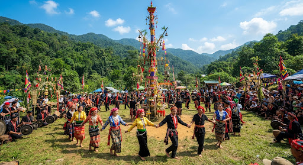

Hướng Phùng · Hướng Hóa
Thôn Chênh Vênh, dưới đèo Sa Mù
Nằm dọc đường Hồ Chí Minh nhánh Tây, cạnh thác Chênh Vênh. Làng du lịch sinh thái cộng đồng hình thành từ dự án PROSPER (Liên minh châu Âu và Ủy ban Y tế Hà Lan–Việt Nam / MCNV) — gắn giữ rừng chứng chỉ FSC (khoảng 700–800 ha rừng cộng đồng).
- • Homestay Đoong Bui (“căn nhà vui vẻ”) của chị Hồ Thị Thiết (sinh 2002): mở năm 2023, 3 nhà sàn, sức chứa 40–50 khách.
- • Giá công bố trên Báo Thanh Niên (12/2025): 100.000 đồng/người phòng tập thể, 200.000 đồng/người phòng riêng. Giá có thể đổi — hỏi trước khi đi.
- • Hộ tiên phong khác: gia đình chị Hồ Thị Thắng và anh Hồ Văn Quý (xóm Rơ Vê) — cải tạo 5 nhà sàn, xây thêm 1 nhà lưu trú.
- • Việc làm: thác, rừng, câu cá, thu hoạch rẫy, cà phê arabica, lễ mừng lúa mới, cồng chiêng, dân ca Oát / Tà Oải.
Nguồn: Báo Nhân Dân (5/2026); Báo Thanh Niên; cổng Sở VHTTDL (svhttdl.quangtri.gov.vn); Báo Công an nhân dân.